Note: This system is only compatible with Windows.
Contents
1 Overview of Goniometer System .. 1
2 Hardware and Software Installation 3
- Goniometer
- UBLOX
- Virtual Serial Port tool
- FastGPS Realtime Solution
- PAMGonio (and PAMGuard)
- COM Port monitoring software (optional)
3 System Setup for Real-Time Tracking 4
- System Set-Up and Checks
o Working the goniometer
- Check FastGPS Realtime Solution settings.
- Setup PAMGuard
o GPS
o FastGPS Realtime
o Display Settings
4 Real-Time Tracking ...13
- Running FastGPS from PAMGuard
- What to expect
- SQL Database
- Reading the debug screen
- Common errors
Overview of Goniometer System
The goniometer system works by intercepting transmissions to ARGOS satellites from animal-attached GPS-ARGOS tags. These transmissions contain encoded GPS positions which have previously been received by the tag. The tag s ARGOS transmissions are intercepted by a CLS Argos UHF antenna and received on a CLS Argos receiver device (Fig.1). These encoded positions are then input into the FastGPS Realtime Solutions program and decoded. Ephemeris data concerning the positions of GPS satellites is required to decode the GPS positions, and is obtained using a U-blox EVK-M8N GNSS evaluation kit (https://www.u-blox.com/en/product/evk-8evk-m8).
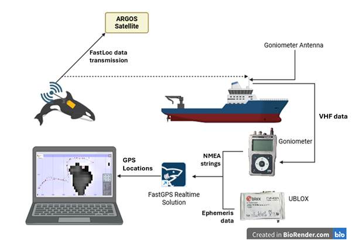
Figure 1: Schematic showing the real-time tracking procedure. Transmission from tag to ARGOS satellites is intercepted by the goniometer antenna. The encoded GPS message is then received by the goniometer, and input in the FastGPS Realtime program, where the GPS position is decoded using ephemeris data received by the UBLOX unit.
This system consists of two main hardware components (Fig.2):
> Goniometer (+ antennas) -> connected to the goniometer antenna, detects signals sent from the tag to ARGOS satellites.
> UBLOX GPS -> gets ephemeris data on GPS satellite positions and is necessary for processing signals detected by the goniometer.
Additionally, a third hardware component can be used to get the GPS position of the boat. This can be either a USB GPS receiver, or any other NMEA feed from the vessel:
> USB GPS -> gets the GPS position of the boat. This can be useful to display the position of the boat relative to GPS positions received from the tag in PAMGuard.
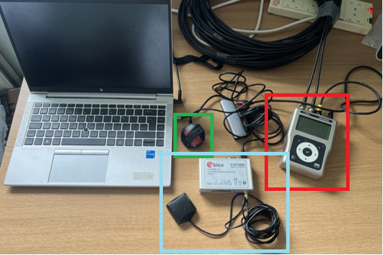
Figure 2: Real-time tracking set up. Goniometer (red box), UBLOX (blue box) and USB GPS (green box) are all connected to the computer.
Hardware and Software Installation
Goniometer
The goniometer system consists of a CLS Argos UHF goniometer antenna, one or two cables (depending on the antenna type) and a CLS Argos receiver device (i.e. goniometer; as pictured in Fig.2). The custom high-gain, non-directional antenna used in this study connects to the goniometer with only one cable, whereas the standard directional antenna connects to the goniometer with two cables (goniometer in Fig.2 is connected to the standard directional antenna by two cables). Both the Goniometer 1 and Goniometer 2 models are compatible with this setup.
To connect the goniometer to the computer, the drivers Goniometer 1 and/or Goniometer 2 need to be installed. These drivers should be provided upon purchase of a Goniometer from CLS.
> The driver for Goniometer 1 is installed when RXG134 Communication Software 3.1.exe is run.
> The driver for Goniometer 2 is installed when RXG234 Communication Software_2.4.00.exe is run.
UBLOX GPS
No driver installation is required.
Virtual Serial Port Tool
An older version of the system required a local bridge between two virtual COM ports. The GPS positions decoded by the FastGPS Realtime software were input into one COM port, so that they could be outputted to another software through the other COM port and displayed. PAMGuard does not read in the GPS positions from the serial bridge output, but instead reads the data files generated by the FastGPS Realtime software. However, the FastGPS Realtime software still requires an available output COM port to run, and creating a virtual bridge is an effective way of ensuring there is an available output COM port for the software.
Several virtual serial port drivers/emulators (both free and paid) are available online and can be used to create this virtual bridge.
NOTE -> The data output through the virtual bridge is in the form of AIS messages, and could also be read into any navigation software compatible with this type of data.
FastGPS Realtime Solution
Install FastGPS Realtime Solution by running FastGPS_Realtime_x64_2.0.5_Setup.exe. All files relating to this software can be found within the C:\ProgramData\Fast GPS Realtime Solution folder on your Windows machine.
PAMGuard
PAMGuard can be downloaded from the PAMGuard website: https://www.pamguard.org/. Download and install the latest Windows installer.
The PAMGonio module is available at https://github.com/douggillespie/pamgonio/releases. Download the jar file from the latest release (e.g. pamgoniometer_1_3.jar) and copy that file into the plugins folder of your PAMGuard installation, e.g. C:\Program Files\Pamguard\plugins. The goniometer module will then be available next time you start PAMGuard. If updating to a new version, make sure you remove the old version first.
It is also helpful to download a software like SQLiteStudio to view the decoded GPS positions in the PAMGuard database. SQLiteStudio can be downloaded through the following link: https://sqlitestudio.pl/.
COM Port monitoring program (Optional)
It is helpful to use a program which can monitor and log incoming data from a serial port, to monitor the incoming data-streams from different devices which are connected to your computer. Example programs include Hyperterminal (https://digitizor.com/wp-content/uploads/2009/08/hyperterminal1.zip) and MobaXterm (https://mobaxterm.mobatek.net/). The COM port monitoring program that we have used and refer to in this manual is Hyperterminal.
System Setup for Real-Time Tracking
System Setup and Checks
Goniometer
Before tag deployment, make a note of the decimal and hexadecimal IDs of the tag(s) you are planning to track. These can be found on the General Settings page when programming the tags in the FastGPS tag setup software. The tag you are tracking will be identifiable through its hexadecimal ID on the goniometer.
Connect your antenna to the goniometer, and switch the goniometer on using the top right button (next to the power symbol). The goniometer has four main screens:
> The RECEPTION screen (Fig. 3A): this is the screen which appears when the goniometer is switched on. This screen provides information on the tag/PTT (PTT -> Platform Transmitting Terminal) that is being tracked, showing details of the last transmission received by the goniometer.
> The FAVORITES menu (Fig. 3B): this screen shows the PTTs which have been saved as favourites. For real-time tracking, it is helpful for your selected PTT to be saved as a favourite.
> The RECEIVING PTT menu (Fig. 3C): this screen displays, in real-time, all the transmissions which have been received (including those from PTTs not labelled as favourites ).
> The OPTION menu (Fig. 3D): this screen gives you access to four other menus:
> GPS info menu (left-most) -> displays information about the goniometer s GPS.
> USB menu (top-middle) -> to activate the USB connection.
> Setup menu (bottom-middle) -> configurations for the goniometer s operating parameters.
> FFT menu (right-most) -> spectral analysis mode, displays the signals received within the Argos frequency band.
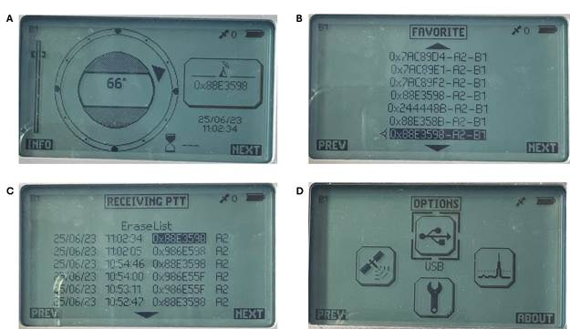
Figure 3: Photos of the four main goniometers screens: (A) RECEPTION screen, (B) FAVORITES menu, (C) RECEIVING PTT menu and (D) OPTIONS menu.
First you must make the tag you are tracking a favourite . To do this, find your tag s hexadecimal ID in the RECEIVING PTT menu, and use the arrows to select your tags hexadecimal ID. The following screen will show up:
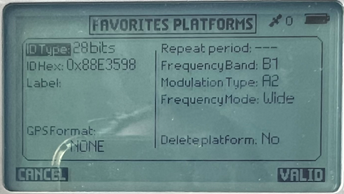
Press VALID , and your tag ID will now be visible within the FAVORITES menu. Once this is done, your tag will be selected as the PTT to track, and details on its transmissions will be visible in the RECEPTION screen. To track a tag which has already been selected as a favourite, go to the FAVORITES menu and select your tag ID. The same screen as above will show up. Press VALID , and you will now be able to access details on your tags transmissions in the RECEPTION screen. The goniometer will also beep every time a transmission from your selected tag is received.
All tag IDs which you want to track within the real-time tracking software need to be labelled as favourites , although they don t all need to actually be selected (and therefore viewable in the RECEPTION screen). This is because the data message transmitted from the Goniometer to your computer will be slightly different depending on whether your tag ID has been labelled as a favourite or not.
To connect your goniometer, plug your goniometer into your computer using the USB cable, and then select USB mode in the OPTIONS menu on the goniometer. It is helpful to have Device Manager open on your computer when you do this, so that you can check which COM port becomes active when your goniometer is connected. On Device Manager , the goniometer will show up as USB Serial Device . Take a note of the COM port which corresponds to the goniometer.
Once connected to the computer, the data stream from the goniometer can be viewed using Hyperterminal, to check if signals from the tag are being detected (data messages will only be viewable if the tag is transmitting). To connect the goniometer in Hyperterminal, create a new connection (File > New Connection) and select the COM port which corresponds to the goniometer. Once the COM port is selected, another window will open up to specify connection settings, where you need to set the bits per second to 9600 bits/s.
Data messages will then show up each time a signal is transmitted from the tag (Fig. 4). These lines will start with the following characters: $NPRF. The F indicates that the PTT has been labelled as a favourite. Messages starting with $NPR corresponds to PTTs that have not been labelled as favourites, from other transmitters in the area.
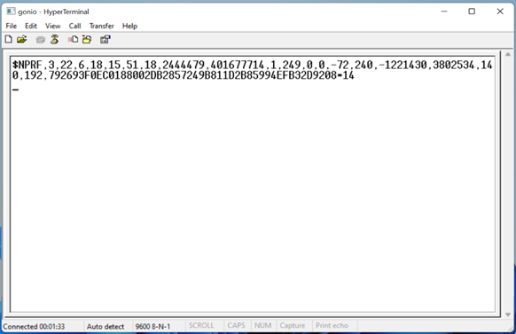
Figure 4: Screenshot of the Hyperterminal screen when a data message has been received from the goniometer, concerning a tag ID which is being tracked and has been labelled as a favourite .
NOTE -> when disconnecting the Goniometer from the computer, first exit USB mode on the Goniometer, then disconnect from the computer.
NOTE -> Windows will assign a COM port ID to each USB device the first time it is connected to the computer. These COM port IDs are required by the software to correctly acquire the correct data from each device. If the device is plugged back into the same USB port (i.e. the next day) then it will be assigned the same COM port ID. However, if you plug the device into a different USB port, it will be assigned a different COM port ID and you ll have to reconfigure the software. Some coloured tapes to put near your USB ports and on the cables from each device can be useful here!
NOTE -> the goniometer can be unreliable when working in cold conditions (<5 C).
UBLOX GPS
To connect to your UBLOX GPS, simply plug it into your computer. On Device Manager , the UBLOX GPS will also show up as USB Serial Device (similarly to the goniometer). Therefore, it is helpful to monitor Device Manager when plugging in the UBLOX GPS, and take note of the COM port the UBLOX GPS corresponds to.
Once the UBLOX GPS is plugged in, you can view the incoming data stream in Hyperterminal. Similarly to the goniometer, create a new connection and select the COM port associated with the UBLOX GPS. In the connection settings window, set the bits per second to 115200 bits/s. The data stream should contain several data lines starting with $GP (Fig. 5). If the UBLOX antenna does not have a clear enough view of the sky, these data lines will be much shorter than those shown in Fig.5, and will contain mostly dots instead of numbers.
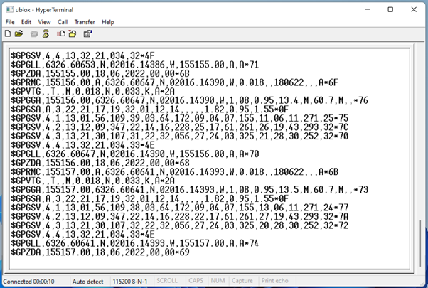
Figure 5: Screenshot of Hyperterminal showing the incoming data stream from the UBLOX GPS.
USB GPS
As with the goniometer and the UBLOX GPS, take a note of the COM port associated with the USB GPS when it is connected to your computer.
The data stream from the USB GPS can then be viewed in Hyperterminal. Create a new connection and select the COM port associated with the USB GPS. In the connection settings window, set the bits per second to bit rate suited to the GPS device your are using. The data stream should contain several data lines starting with $GP (Fig. 6). Similarly to the UBLOX GPS, if the GPS antenna does not have a clear enough view of the sky, these data lines will be much shorter than those shown in Fig. 6, and will contain mostly dots instead of numbers.
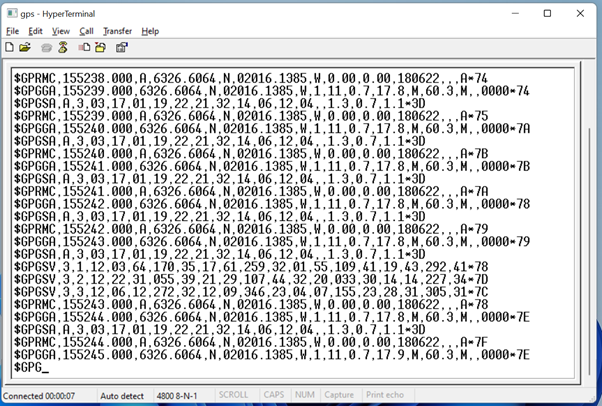
Figure 6: Screenshot of Hyperterminal showing the incoming data stream from the USB GPS.
Specify FastGPS Realtime Solution settings
To specify your settings for the real-time tracking, you will need to edit two .properties files in the C:\ProgramData\Fast GPS Realtime Solution folder. If you are using a university-owned computer with heightened security protocols, it may be necessary to open this file As Administrator . To do this, run Notepad as administrator and open the .properties files from within this program.
The first file to edit is the argosid.properties file, in which the tag s hexadecimal and decimal IDs can be associated to each other for easier identification. Add the IDs of the tags you plan to track (each on a new line) to the document in the following format: HEXID, DECIMAL (with no spaces) (Fig. 7). There is no need to delete previous tag IDs on this document, you can just add your current IDs to the existing ones.
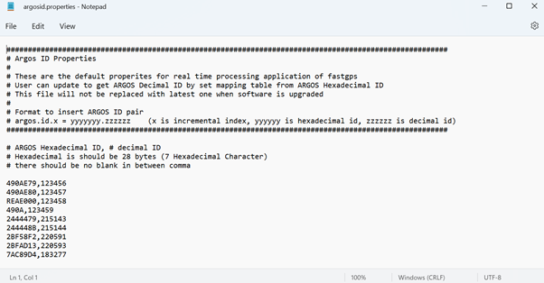
Figure 7: Screenshot of the argosid.properties file with several tag IDs specified.
The second file to edit is the fastgps.properties file, which contains the settings for FastGPS Realtime Solution . This file will have to be modified every time a different goniometer model is used, and for every field-location change. Screenshots of these settings are included below, as well as the specific settings which must be modified.
First, location settings need to be edited to specify a relevant seed location. Set default.lat, default.lon and default.alt to your field-site location:
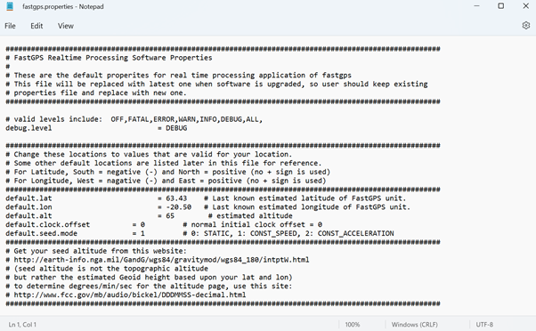
Next, double check that the initial processing parameters are correct (as below):
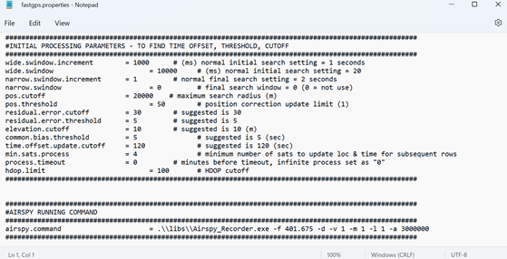
Check the settings for the UBLOX (referred to as navigation device) and the goniometer (referred to as observation device) as below. Depending on the goniometer model you are using (Goniometer 1 vs Goniometer 2), you may have to modify the observation device settings. The settings to be changed are gonio.npr.payroad_len_pos, gonio.npr.payroad_data_pos, gonio.nprf.payroad_len_pos and gonio.nprf.payroad_data_pos. These settings inform FastGPS Realtime Solution of the location of relevant data within the $NPRF and $NPR messages provided by the goniometer. As the length of these messages differ depending on the goniometer model, their settings also differ:
|
|
Goniometer 1 |
Goniometer 2 |
|
gonio.npr.payroad_len_pos |
16 |
17 |
|
gonio.npr.payroad_data_pos |
17 |
18 |
|
gonio.nprf.payroad_len_pos |
18 |
19 |
|
gonio.nprf.payroad_data_pos |
19 |
20 |
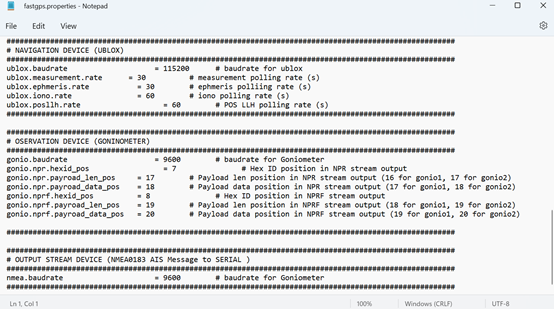
Also check the settings of the AIS output (referred to as output stream device) as above.
PAMGuard
When you launch PAMGuard, you will be prompted to load a PAMGuard configuration. Click Browse/Create New and create a new configuration, with a name of your choice, and save it in a known location.
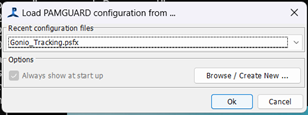
Once PAMGuard is open, start adding in the necessary modules to run the Real-Time Tracking, using the Add Modules function (File > Add Modules).
The first module to be added is NMEA Data Collection (File > Add Modules > Maps and Mapping > NMEA Data Collection). Next edit the NMEA settings (Settings > NMEA Data Collection > NMEA Parameters), change the NMEA source to Serial NMEA data and in the Serial Settings, indicate the COM port corresponding to you USB GPS and make sure the BAUD is 4800 bits/s. You can view the incoming NMEA data strings through Settings > NMEA Data Collection > NMEA Strings.
Next, add the GPS Processing module (File > Add Modules > Maps and Mapping > GPS Processing).
Next, add a Map module (File > Add Modules > Maps and Mapping > Maps). This will create a display on which you can see your location and the decoded GPS locations intercepted from tag transmissions. This map display can be edited in Map > Map options, where raster and contour files can also be loaded to display bathymetry.
Next, add in the Fastloc tag data display module (File > Add Modules > Maps and Mapping > Fastloc tag data display), which enables PAMGuard to read in the data output by FastGPS Realtime and integrate it into PAMGuard databases and displays. The real-time tracking settings can be accessed and edited through Settings > Fastloc tag data display > Goniometer settings. Make sure that the path to the FastGPS_Realtime executable file is correct, and amend it if not. You can also set the COM ports of the UBLOX GPS ( Nav port ), the Goniometer ( Goniometer ) and one of the COM ports which make up the serial bridge ( Output port ). Make sure that Show debug output is selected, there will be more on this below, but it will make troubleshooting much easier. Depending on the permission settings on your computer, Settings > Fastloc tag data display > Argos stations will allow you to view and perhaps edit the hexadecimal and decimal IDs indicated in the argosid.properties. If this file is locked for editing within PAMGuard, you should still be able to edit it by running Notepad as administrator, as explained above. Then, set an output folder in which to store processing output files.
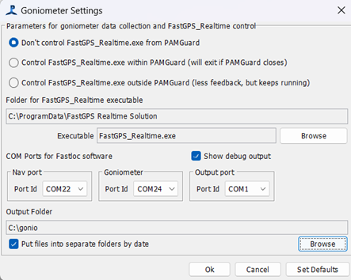
Then, add in a User Display module (File > Add Modules > Displays > User Display). Here, it might be helpful to change the name of the module to something like Goniometer . Next, go to this module tab, and go to Display > Goniometer > New Goniometer data. This will open up a window from with you can launch and control FastGPS Realtime within PAMGuard.
Finally, add in a database to store the decoded GPS positions (File > Add Modules > Utilities > Database). Once this module is created, go to File > Database > Database Selection, and create a new SQLite database.
For further information on configuring PAMGuard modules, see the help menu available from within PAMGuard, or go to https://www.pamguard.org/olhelp/.
Real-Time Tracking
Running FastGPS from PAMGuard
Once all goniometer settings have been input, the FastGPS Realtime processing can be launched. This can be done from the Goniometer tab in PAMGuard. You can either run FastGPS_Realtime.exe from within PAMGuard, although the processing will stop if PAMGuard closes unexpectedly, or you can run FastGPS_Realtime.exe from outside of PAMGuard, which means you will receive less feedback about the processing but it will keep running even if PAMGuard closes.
To run FastGPS_Realtime.exe, just select either of the aforementioned options within the Goniometer tab in PAMGuard. For example, in the screenshot below, FastGPS_Realtime.exe will be run from within PAMGuard.

What to expect
As the processing runs, decoded positions will be added to the Map display in PAMGuard. If you have several tags transmitting at the same time, you can control which tags GPS positions are viewable on the display within the Plot overlays menu. This is accessible by right-clicking on the map display, and selecting Plot overlay options . This will open up the following window (details may vary depending on what other PAMGuard modules are loaded):
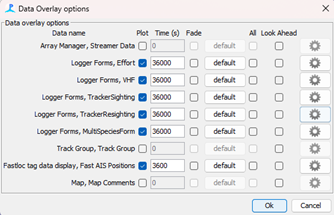
Make sure that the Plot option for Fastloc tag data display, Fast AIS positions is checked, and that the time that these positions are visible on the map display ( Time (s) ) is set to an appropriate value (eg. 3600 seconds -> 1 hour). To select which tag IDs to display, click on the settings button (with the gear symbol on the right of the window) for the Fastloc tag data display, Fast AIS positions . This will open up the following window, where you can select the tag IDs that you want to display on the map:
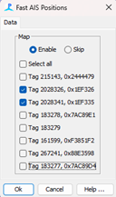
If you are tracking multiple tags at the same time, you can set the colours of the GPS positions displayed on the map to be different for each tag ID. For this, right-click on the map display, and click on the gear symbol next to Fastloc tag data display, Fast AIS positions (in the blue box below):
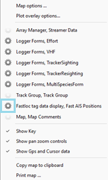
Under the Symbols tab, go to Modifiers and make sure that Fill Colour , and Line Colour are checked (Default Symbols > Rotate colours), this will assign a different display colour to each tag ID:
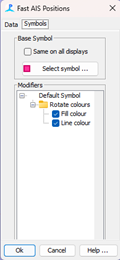
When tracking two tags at the same time, your map display should look something like this:
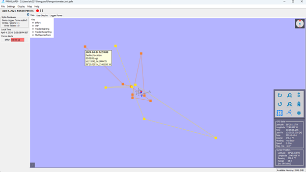
The orange and yellow squares represent GPS positions received from two different tags. You can get more information on individual GPS positions by hovering your cursor over the position on the map display. The red boat-shaped symbol on the map display represents your position (given by the USB GPS).
SQLite Database
To ensure the right database is opened, access the database from within PAMGuard (File > Database > View Database). PAMGuard commits data to the database every 30s and whenever PAMGuard is shut down. If you want to view data in the database that s only just arrived, then first select the PAMGuard menu File->Database->Commit Changes to write data immediately. The GPS positions received can be viewed within the SQLite database created, under the FastAISPositions tab. To view each decoded GPS position (as in the screenshot below), go to the Data tab within FastAISPositions and use the blue button (with arrows in a circle) in the top left corner of the tab to refresh the list of GPS positions.
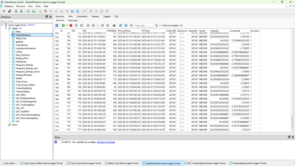
Reading the debug screen
Whichever way you decide to run FastGPS Realtime Solution from PAMGuard, you can also monitor the real-time tracking from the debug window. The debug window is particularly useful to check when the positions displayed on PAMGuard seem a little strange (Table 1). To ensure the debug window appears, make sure that Show debug output is selected in the Goniometer settings.
Each data transmission from the tag detected by the goniometer will be displayed in the debug window and begin with $NPRF (red box in the screenshot below).
> When the NPRF message cannot be decoded (usually because it is incomplete), the data message will be labelled as invalid packet (green box in the screenshot below).
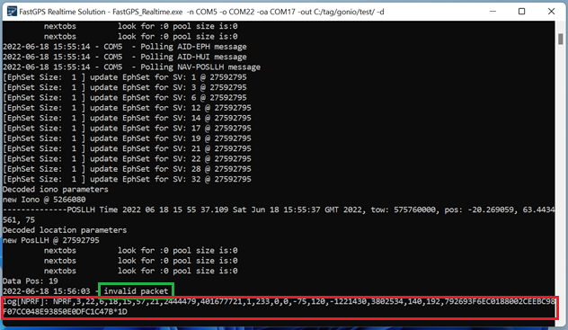
When the NPRF messages are successfully decode by the processing, there will be a line that says Decode NPRF , as well as some additional information concerning the transmission from the tag (number of satellites #sats for instance) (blue box in the screenshot below).
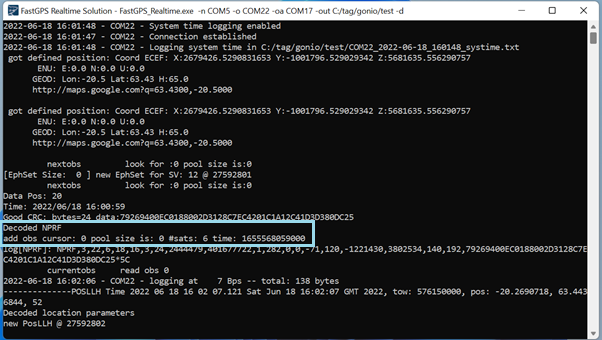
Several lines of processing will quickly appear as the data message is processed. The last few lines contain information on whether a GPS position has successfully been identified (red box in the screenshot below). When an error has occurred during processing, Success will be replaced by an indication of the error (the most common being the absence of ephemeris data).
- NOTE: an AIS file will be created as long as NPRF messages are decoded and processed, even if an error occurred during the processing. Hence, if any GPS positions from the PAMGuard display seem questionable, it is helpful to check whether the decoding of each incoming NPRF message is actually successful, or whether an error has occurred.
The time at which the GPS snapshot was taken by the GPS logger can be found in the pink box in the screenshot above. This indicates how old the decoded GPS position is.
On the same data line within the processing window, the decimal ID of the transmitter is indicated (green box in the screenshot above). This is helpful to check this when several tags are transmitting at the same time.
The total number of data messages processed into AIS messages is indicated in the nextobs line on the processing window (blue box in the screenshot below, in which two AIS files have been generated).
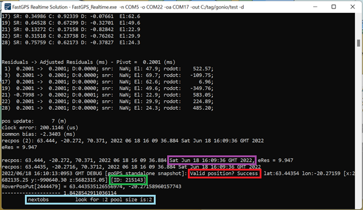
Common Problems
Table 1: List of commonly occurring errors during real-time tracking and how to fix them.
|
Error |
Fix |
|
Connection is not established with UBLOX GPS (navigation device) when launching FastGPS Realtime Solution from PAMGuard |
- Check that the blue light on the UBLOX is flashing. o If not, the antenna does not have a clear enough view of the sky. - Check the data stream from UBLOX GPS in Hyperterminal. o If the $GP messages mostly contain dots instead of numbers, the antenna does not have a clear enough view of the sky. o If nothing shows up on Hyperterminal, disconnect the UBLOX GPS from the computer and then reconnect it, ensuring the antenna has a good view of the sky. |
|
Connection is not established with Goniometer (observation device) when launching FastGPS Realtime Solution from PAMGuard |
- Check that the USB mode is properly activated on the goniometer. o If not, exit and then re-enter USB mode on the goniometer. |
|
Invalid packets are being repeatedly received |
- Check that the goniometer settings in the fastgps.properties file are set to the right goniometer model (goniometer 1 or 2). o If not, edit the settings to correspond to the goniometer model. |
|
Tag s GPS positions displayed on PAMGuard look questionable, eg.: - Tag has been in the same location for a while. - Tag is in the same position as you. - Tag is in the same position as the first position received when FastGPS Realtime Solution was launched. - There is no tag position displayed. |
- Check the FastGPS Realtime Tracking debug window. o If the tag has been in the same position for a while, check the time of GPS positions being received. It could just be that the same GPS position received by the tag itself is being sent over and over. o If the tag has no displayed position, the tag is in the same position as you or the tag is in the same position as the first received position when FastGPS Realtime Solution was launched, this could be due to erroneous GPS positions being transmitted. This would be the case if the result of the processing in the debug window ( Valid position? ) is an error such as: NotEnoughValidSats or MaxCorrection. These errors are usually one-offs, and usually resolve themselves once the next accurate GPS position is transmitted from the tag. o The aforementioned issues with the tag s displayed GPS position could also be due to a lack of ephemeris data from the UBLOX GPS. This would be the case if the result of the processing in the debug window ( Valid position? ) is: Eph_NotFound. This error usually resolves itself in time as the UBLOX GPS builds an ephemeris dataset. However, this can take up to 1 hour, so it can be helpful to launch FastGPS Realtime Solution well in advance of the start of your experiment. Placing the UBLOX antenna up high with a clear view of the sky can help to reduce this issue. o Other errors in the processing, showing up as HDOP and HighResidualError as the result of processing in the debug window, should still give a valid GPS position, it might just be quite accurate. These errors are usually one-offs, and usually resolve themselves once the next accurate GPS position is transmitted from the tag. |